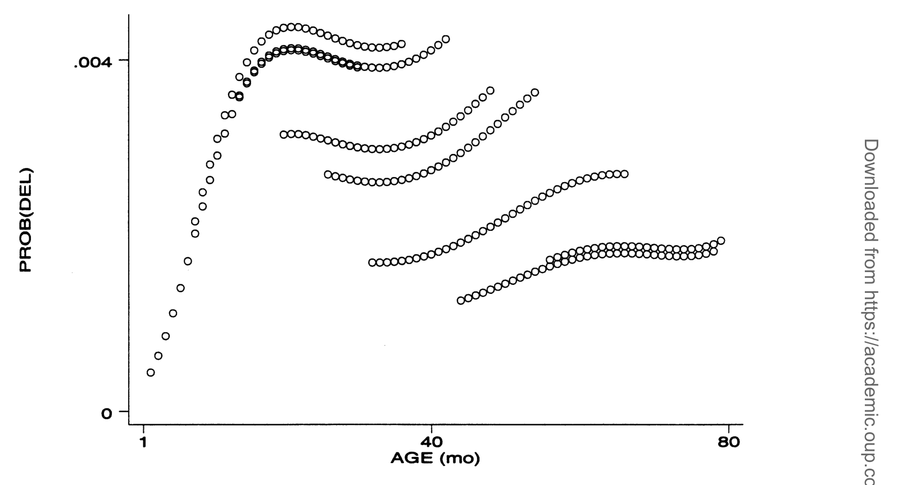
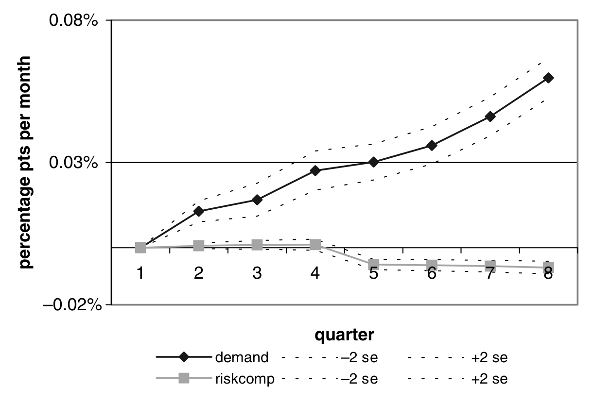
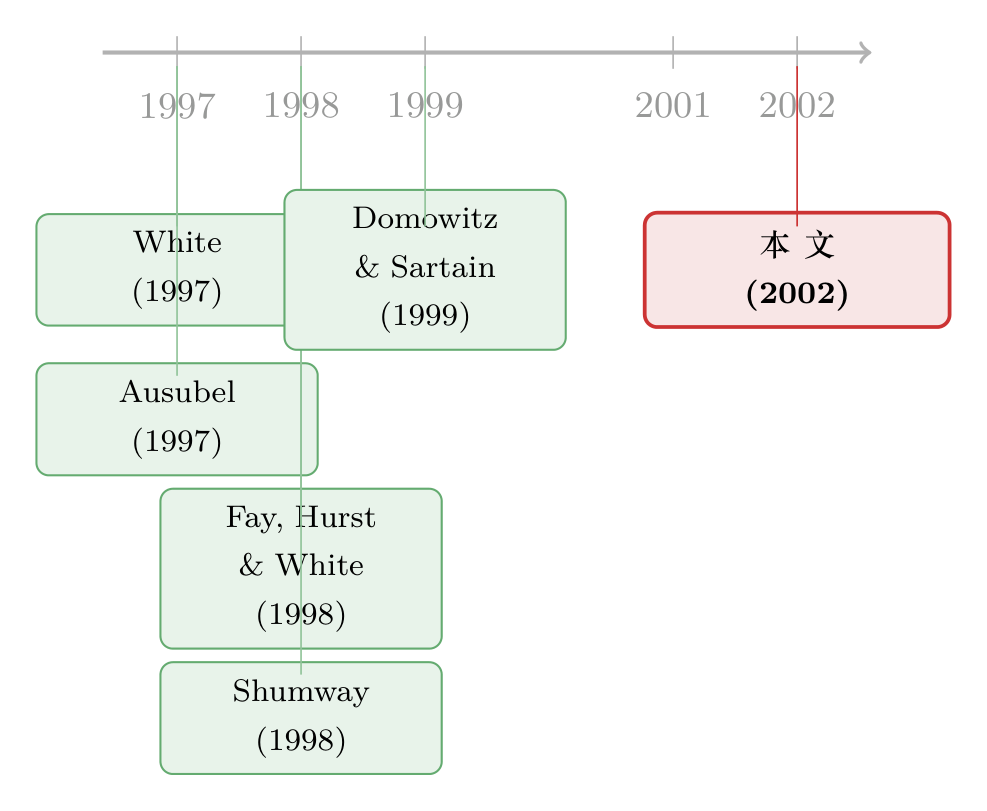

强经济里的违约潮：是「人」变坏了，还是「想法」变了？
本文读的是 Gross & Souleles (2002, Review of Financial Studies)：在 1994–1997 这段经济一片大好的年份里，美国个人破产却暴涨了约 75%。作者用一套覆盖上万个信用卡账户的久期模型，把这场违约潮拆成两股力量——借款人「风险变差了」与借款人「更愿意赖账了」。结论是：即便把所有能观测到的风险特征与宏观基本面都控制住，1997 年的持卡人比 1995 年「同样风险」的持卡人，破产概率仍高出近 1 个百分点、拖欠概率高出近 3 个百分点。标准信用风险模型漏掉了一个会随时间漂移的违约因子。
1 一个反常识的开场
先讲一件看上去不太对劲的事。
1994 到 1997 年，美国经济强劲、失业率走低、股市一路向上。可偏偏就在这几年里，个人破产申请的数量涨了大约 75%——1997 年一年就有 1.35 百万件，相当于全美超过 1% 的家庭在同一年「申请破产」。信用卡的拖欠率几乎同步飙升，给放款人造成的损失，吃掉了他们收到的利息中相当可观的一块。
这就奇怪了。教科书告诉我们，违约是经济的「逆周期」现象——日子难过的时候人们才还不上钱。可这一回，是在最好的年景里，违约潮汹涌而至。一个在繁荣中爆发的违约潮，本身就是一道谜题。
于是一个自然的问题冒出来：到底是谁、因为什么，把账赖掉了？
市面上有两套针锋相对的解释。
第一套叫 风险效应（risk effect）：是借款人这个「池子」本身变差了。这些年里信用卡的发卡量、授信额度都在猛涨，大量原本信用不够格的人也拿到了卡——是这批「新进来的差客户」贡献了大部分新增违约。换句话说，违约多了，是因为放款人把钱借给了更危险的人。
第二套叫 需求效应（demand effect）：借款人的「风险」没怎么变，变的是他们「愿不愿意」违约。破产本来是有成本的——社会污名（stigma）、信息成本、法律成本。可这些年破产越来越普遍，污名越来越淡，破产律师的广告铺天盖地，「怎么申请破产」的指南满天飞，连亲戚朋友里都有人走过这条路、随时能给你「传授经验」。当违约的成本悄悄塌下去，哪怕只塌一点点，违约率都可能大幅抬升——别忘了 White (1997) 估计，有 15% 到 31% 的美国家庭，单从当前净值看，申请破产对自己是划算的。
「需求效应」这个名字有点反直觉。它不是说人们「需要」违约，而是指：在控制住风险特征之后，人们违约的意愿整体上移了。它度量的是违约与「放款人惯用的那些预测变量」之间关系的漂移。
2 为什么这道题这么难
接着，一个更要命的问题是：这两套解释，凭什么能被区分开？
它们的政策含义截然相反。信「风险效应」的人主张收紧信贷供给，把差客户挡在门外；信「需求效应」的人则主张让破产的条款变得不那么诱人，把违约的成本重新抬上去。站错队，开错药。
更关键的是，对放款人而言，这两者意味着完全不同的世界。风险效应只是池子变差——放款人改善一下组合的风险构成就能应对。可需求效应意味着：违约和放款人惯用的预测变量之间的关系本身变了。信用风险模型里漏掉了一个系统性的、随时间变化的因子，模型会变得不稳定，进而导致信贷的错配与错误定价。一个没被预料到的违约成本下降，会带来比预期更大的信贷损失。
可惜，实证上把这两股力量分开，长期以来异常困难。原因有二：
其一，需求效应难以「操作化」。 违约的社会、法律、信息成本，本身就难以测量。人们提出的那些代理变量，几乎都栽在内生性和反向因果上。举个论文里的例子：你想用「破产律师的广告数量」当作信息/法律成本的反向代理。问题是——广告增多，到底是破产增多的原因，还是破产增多的结果？很可能是后者：违约先涨，律师嗅到生意，才加大了广告。
其二，控制住风险构成，需要海量、细致的数据。 你得对一大批借款人——尤其要包含足够多的违约者——同时掌握他们的信贷供给与信用风险的详细度量。传统的家庭调查数据（如 SCF、PSID）根本喂不饱这样的模型。这一点和公司违约文献里的困境如出一辙（Saunders, 1999 反复强调的，正是同样两个老大难：违约样本太少、模型在周期上不稳定）。
而真正关键的一步，在于作者手里那份数据。
3 一份「放款人视角」的数据
作者拿到的，是来自多家发卡机构、覆盖数千个信用卡账户的面板数据。它的妙处在于：它包含了发卡机构在评估账户时所知道的几乎一切——来自申请表、月度账单、征信报告的信息，包括债务水平、购买与还款历史、授信额度，以及发卡机构自己的内部信用评分（internal_score）和征信局评分（external_score）。
这就把第二个难题正面化解了：既然数据里包含了发卡机构用来度量风险的全部信息，那么作者就能控制住所有发卡机构可观测的风险构成变化。剩下还在漂移的那部分违约倾向，就是站在放款人视角上、他「本该预料却没预料到」的东西。
样本期是 1995:Q3 到 1997:Q2，每个账户跟踪 24 个月，正好罩住了全国违约率急升的那段时间。两个违约指标这样定义：DEL 标记账户首次连续三个月未达最低还款（业内对「严重拖欠」的标准定义）；BK 标记发卡机构获知持卡人申请破产的那个月。既破产又拖欠的，算作破产。
最终样本大致是：约 4,000 个走向破产的账户、约 14,000 个走向拖欠（但未破产）的账户，外加约 10,000 个全程未违约的账户作为对照组。违约账户被有意按预定比例超采样以提高精度，所有报告的结果再加权还原为有代表性的总体。
数据的局限也要诚实说出来：分析单元是「信用卡账户」，不是个人或家庭；也缺少家庭资产、就业状态这类变量。但作者的辩护很有力——发卡机构自己也看不到这些信息，所以它们的缺席不会影响识别策略；况且 Fay, Hurst & White (1998) 发现这些变量对破产的影响在量级上相对较小。
4 识别策略：把违约写成一个久期模型
然后，怎么把「风险」和「需求」从同一组数据里分离出来？核心是一个动态 probit 模型，它等价于离散时间的久期模型（duration model）。
设 \(D_{i,t}\) 表示账户 \(i\) 在第 \(t\) 月是否违约。比如一个账户在第 10 个月走向三期拖欠，那么它前 9 个月 \(D_{i,t}=0\)，第 10 个月 \(D_{i,10}=1\)，随后退出样本。令 \(D^*_{i,t}\) 为对应的潜变量（latent index）。主设定就是下面这个方程：
这个方程的精巧之处，全在每一项各司其职：
- \(\text{age}_{i,t}\) 是账户开立至今的月数。它让违约的风险率随存续时间变化（这正是久期模型里的「久期依赖」）。作者用五阶多项式，让对应的风险函数能非参数地自由弯曲。
- \(\text{risk}_{i,t}\) 和 \(\text{econ}_{i,t}\) 分别吸收账户的风险特征与当地经济状况——把风险效应该解释的部分都「喂」进去。
- 而 \(\text{time}_t\) 这组季度时间虚拟变量，是整篇文章的题眼。它捕捉的是：在控制住账户的年龄、风险特征和经济基本面之后，任何账户、任何风险水平上，平均违约倾向随时间的整体移动。
逻辑链于是闭合了：把风险构成（\(\text{risk}\)）和基本面（\(\text{econ}\)）都控制住，如果 \(\text{time}_t\) 的系数还在显著地往上爬，那爬升的就不可能是风险效应——它只能是那个被标准模型漏掉的、随时间漂移的因子，也就是需求效应的指纹。
5 一条会「翻案」的曲线
为了让读者看清这套逻辑，作者先从一个最简单的设定讲起：只放时间虚拟变量和年龄多项式，把 \(\text{risk}\)、\(\text{econ}\) 全部拿掉。
结果是一条漂亮的倒 U 形风险曲线：账户从开立起，拖欠概率一路上升，到大约「两岁生日」时见顶，然后回落。而时间虚拟变量的系数，随时间总体递增（虽不完全单调）——风险函数整体在向上平移，简单设定是不稳定的。
到这里，你很容易脱口而出：看，这就是需求效应！违约倾向凭空抬升了。
但真正关键的一步在于——别急着下结论。 这个上移，完全可能是风险构成在变。如果这些年放贷标准放松了，那么越晚开立的账户越危险，把平均违约率抬高。
于是作者做了一个极漂亮的反证：把时间虚拟变量换成「世代（cohort）」虚拟变量——按账户开立的年份分组（1990 年开的卡是一个世代，1991 年的是另一个，以此类推），看每条曲线代表一个世代的年龄风险函数。如果违约潮真是「越新的世代越差」造成的，那么近年世代的曲线就该明显更高。

Figure 2: shows the predicted values, with each curve now representing the
如图 2 所示，按世代画出的年龄风险曲线，形状和原来几乎一样、彼此叠在一起——近年开立的世代并没有系统性地更危险。这就堵死了「风险构成恶化」这条最自然的退路：违约倾向的上移，不是因为新客户更差。
接着把完整的 \(\text{risk}\) 与 \(\text{econ}\) 都加回去，再看时间虚拟变量——它们依然显著为正、依然在爬。换句话说，信用额度的扩张和其他风险构成的变化，只能解释违约率随时间变化中很小的一部分。

Figure 3: riskcomp is initially flat and then declines. As expected the aging by
如图 3 所示，作者把预测的违约倾向进一步拆开：代表风险构成的那条曲线（riskcomp）一开始平、随后甚至下行——风险构成不仅没恶化，反而略有改善；而剔除掉风险与基本面之后剩下的那条时间曲线，仍在稳稳上抬。两条线一对照，需求效应的轮廓就显形了。
这就是反转：看似是「人变坏了」，拆开却发现是「想法变了」。
6 主要结果：把漂移翻译成百分点
落到具体量级，结论相当有冲击力。
在其他条件相同（ceteris paribus）的情况下，一个 1997 年的持卡人，比一个风险特征完全相同的 1995 年持卡人，宣告破产的概率高出近
1个百分点，走向拖欠的概率高出约3个百分点。
这个量级有多大？作者给了一个绝妙的参照系：这几乎相当于整个持卡人群体的信用评分集体恶化了一个标准差。 也就是说，那个「看不见的需求漂移」，其杀伤力堪比把所有人的信用分往下砸一个标准差——而它，恰恰是标准模型完全没有捕捉到的。
与之相对，信用额度的提高和其他风险构成的变化，只解释了违约率随时间变化中很小的一块。
一句话：标准违约模型漏掉了一个重要的、系统性的、随时间漂移的违约因子，这与需求效应（违约成本下降）相一致。
要小心措辞。作者并没有「直接测到」污名下降——社会成本本就难以测量。他们的策略是排除法：把所有能观测的风险与基本面都控制干净，剩下那个顽固的时间漂移，在量级和方向上都与「违约成本下降」的故事吻合，而与「风险构成恶化」的故事相悖。这是一种间接但有力的识别。
7 文献脉络
把这篇论文放回它的谱系里，故事会更清楚。
早期的个人破产实证，多半盯着 1978 年《破产法》的修订，或各州不同的财产豁免水平对申请率的影响（综述见 Hynes, 1998）。这些研究普遍用加总数据，因而压根触不到「风险构成」这个层面。
接着，一批研究试图用家庭微观数据撬动这道题。Moss & Johnson (1998) 用 SCF 记录了信贷的「民主化」——低收入家庭越来越能借到钱，并以此解释破产上升；可惜 SCF 不记录谁申请了破产，他们无法实证检验（这其实是风险构成效应的一个版本，亦见 Ausubel, 1997）。Domowitz & Sartain (1999) 把 SCF 和一份破产申请数据拼起来绕开这个限制，但在 SCF 这样的小截面里估计破产这种低概率事件，本就力不从心。
真正最接近的先行者，是 Fay, Hurst & White (1998)。他们利用 1996 年 PSID 的回溯性破产问题，为每个家庭估算申请第 7 章破产的经济收益，并用所在州滞后的破产率作为污名（或信息成本）的反向代理，发现申请概率随经济收益和这个反向代理都上升——但两者的量级都不大。问题在于：他们的 PSID 样本在 12 年里只有约 250 个破产观测，在如此小的样本上做非线性推断相当困难；而且 PSID 既没有信用评分这类显式的风险度量，也没有授信额度这类信贷供给度量。
方法论上，Shumway (1998) 的提醒至关重要：公司违约文献长期用静态截面设定，而久期分析能显式地容纳借款人风险随时间的变化。本文正是把这一思路搬到个人违约上。

于是这篇论文的位置就清楚了：它用一份放款人视角、含上万违约观测、横跨数年的账户面板，第一次把「风险效应 vs 需求效应」从一道定性争论，变成了一道能被定量回答的题。它也和作者自己的姊妹篇 Gross & Souleles (2002, QJE) 互补——那篇专门识别信用卡债务对信贷供给的响应，把需求与供给显式分开。
关于「招工容易/经济好转反而预言了信用风险」这种逆周期直觉，公司债一侧有一个有趣的镜像，可参见《当招人变得太容易：失业率为什么预言了公司债的违约》；而破产「标记」本身如何影响一个人后续的信贷可得性，则可参见《破产标记被抹去那天，他借到了钱，也开起了公司》。
8 评论与延伸（Q&A + 研究方向）
(a) 几个可能的疑问
Q：时间虚拟变量「显著为正」，凭什么就等于需求效应？会不会只是漏掉了某个变量？
严格说，时间虚拟变量是一个「剩余项」，它捕捉的是控制住可观测风险与基本面之后所有随时间变化的因子。作者的论证是排除法：它的方向（上升）和量级（约等于全员信用分恶化一个标准差）与违约成本下降一致，而与风险构成恶化相悖（世代分析已堵死后者）。但它本质上仍是「残差」，不能排除存在另一个未被建模、恰好同向漂移的因子。这是这类识别的固有软肋。
Q：账户超采样了违约者，加权之后结论还可信吗？
超采样是为了在低概率事件上获得精度——否则上万账户里破产者太少，估计会很不稳。作者用预定比例超采样，再把所有结果加权还原为代表性总体，这是处理稀有事件的标准做法。真正的隐忧不在加权，而在「账户≠个人」：同一个人可能有多张卡，跨卡的相关性会影响标准误。
Q：用账户而非家庭，会不会严重低估违约？
会有偏差，但作者做了缓冲：数据里的征信局变量覆盖了持卡人所有信贷来源（不止这张卡），而且他们同时研究了账户层面的拖欠（不只是破产）。加上发卡机构本就看不到家庭资产/就业，这些信息的缺失不影响「站在放款人视角识别」这一目标。
Q：1995–1997 是一段经济极好的时期，这会不会让结论没有代表性？
恰恰相反，这是作者刻意挑的。在一段宏观条件如此良性的窗口里，如果还能发现违约模型的不稳定，那是一个相对更强的结果——因为你没法把违约潮甩锅给经济衰退。代价是外部效度：在衰退期，风险效应与需求效应的相对重要性可能完全不同。
Q：那个倒 U 形的「年资」效应，直觉是什么？
新开的账户违约率低（刚通过审核、蜜月期），随后逐月攀升，到约两年时见顶，再回落（撑过两年没出事的，往往是真稳健的客户，差客户已被筛掉）。这条曲线必须用足够灵活的形式（五阶多项式）来拟合，否则会把年资效应和时间效应混淆——这也是单一世代数据做不了这件事的原因。
Q：这对信用风险建模到底意味着什么？
意味着「用历史关系外推未来违约」是危险的。如果违约与债务、额度、评分之间的关系本身会漂移，那么再精细的截面模型也会系统性地低估违约，导致信贷错配或错误定价。这也是为什么作者反复强调：他们发现的是模型的不稳定性，而不只是一个新系数。
(b) 几个可能的研究问题与提案
1. 把同样的「风险 vs 需求」分解搬到公司债违约上。
【经济故事】公司违约同样存在「池子变差」与「违约/重组意愿变化」之争（如破产法庭友好度、战略性违约文化的变迁）。久期模型 + 时间虚拟变量的分解框架可以直接移植。 【可行性】中。需要带评级、财务、行业的公司面板（Compustat + Moody's/S&P 违约库），识别上比消费信贷干净（变量更可观测），但「需求效应」在公司语境里更难讲清楚——它更像是重组成本/债权人友好度的变化。
2. 用一次外生的破产法改革，给「需求效应」找一个真正的工具。
【经济故事】本文的需求效应是「残差」识别。若能找到一次只改变违约成本、不改变借款人风险的法律冲击（如某州豁免额度或申请程序的突变），就能把需求效应从残差里解放出来，做成准实验。 【可行性】高。2005 年 BAPCPA 及更早的州级改革提供了大量断点；用 双重差分 (difference-in-differences, DiD) 或断点回归比较改革前后、跨州「同样风险」持卡人的违约倾移，是 doable 的，且与本文的账户数据高度互补。
3. 外资/机构持有人结构与消费信贷资产支持证券（ABS）的违约定价。
【经济故事】本文指出大量信用卡债被证券化。如果违约存在一个「会漂移、被模型漏掉」的因子，那么持有这些 ABS 的不同投资者（外资 vs 本土、做市商 vs 买方）是否对这个隐藏因子定价不同？谁在为「需求效应」买单？ 【可行性】中。需要信用卡 ABS 的层级持有人数据（较难获取）与二级市场价格；识别隐藏因子的暴露需要把本文的时间漂移映射到证券现金流上，技术上不轻松但路径清晰。
4. 用高频/近实时的征信与申请数据，给「污名下降」找直接证据。
【经济故事】本文只能间接推断污名下降。若能拿到细到地区—月度的破产搜索量、律师广告投放、社交网络中「身边人破产」的暴露度，就能把需求效应的几个候选机制逐一直接度量，而非塞进残差。 【可行性】低到中。代理变量仍逃不开内生性（广告是因还是果），但配合断点/IV 与本文式的风险控制，至少能把「机制分解」往前推一步。
9 我的判断
贡献。 这篇论文最大的价值，不在于「发现破产涨了」，而在于把一场吵了多年的定性争论，变成了一道可定量回答的识别题。它的三件武器——放款人视角的全信息数据、把年资/时间/世代显式分开的久期模型、以及「世代分析」这一招干净的反证——配合得近乎优雅。「漂移量级≈全员信用分恶化一个标准差」这个对照，更是把抽象的「需求效应」翻译成了人人能掂量的分量。它对信用风险建模的警示——关系会漂移，外推有风险——在二十多年后看依然成立，甚至更显先见。
对识别的担忧。 核心软肋是时间虚拟变量的「残差」属性：它捕捉的是一切未被建模的同向漂移，作者只能靠排除法把它指认为需求效应，而无法直接测到污名或信息成本的下降。如果存在某个被遗漏的、恰好在 1995–1997 同向移动的风险维度（哪怕是发卡机构也观测不到的某种宏观—行为耦合），它会被错算进需求效应。此外，「账户≠个人」带来的跨卡相关性、以及超采样下的标准误结构，也值得更谨慎的对待。
后续想看到什么。 我最想看到的，是把这套分解接到一次外生的违约成本冲击上（提案 2），让需求效应从残差变成准实验里的处理效应；其次，是把这条逻辑搬到我更关心的公司债/信用市场，看看「违约关系的时间漂移」在机构与外资持有人之间是否被差异化定价。如果那个「看不见的因子」真的存在，它就不该只藏在消费信贷里。
参考文献
- Ausubel, L. (1997). Credit Card Defaults, Credit Card Profits, and Bankruptcy. American Bankruptcy Law Journal 71, 249–270.
- Ausubel, L. (1999). Adverse Selection in the Credit Card Market. Working paper, University of Maryland.
- Domowitz, I., and R. Sartain (1999). Determinants of the Consumer Bankruptcy Decision. Journal of Finance 54(1), 403–420.
- Fay, S., E. Hurst, and M. White (1998). The Bankruptcy Decision: Does Stigma Matter? Working paper, University of Michigan.
- Gross, D., and N. Souleles (2002). An Empirical Analysis of Personal Bankruptcy and Delinquency. Review of Financial Studies 15(1), 319–347.
- Gross, D., and N. Souleles (2002). Do Liquidity Constraints and Interest Rates Matter for Consumer Behavior? Evidence from Credit Card Data. Quarterly Journal of Economics (forthcoming).
- Hynes, R. (1998). Three Essays on Consumer Bankruptcy and Exemptions. Manuscript, University of Pennsylvania.
- Moss, D., and G. Johnson (1998). The Rise of Consumer Bankruptcy: Evolution, Revolution, or Both? Working paper, Harvard Business School.
- Musto, D. (2000). The Effect of Personal Bankruptcy on Credit Access. Working paper, University of Pennsylvania.
- Saunders, A. (1999). Credit Risk Management. Wiley, New York.
- Shumway, T. (1998). Forecasting Bankruptcy More Accurately: A Simple Hazard Model. Working paper, University of Michigan.
- White, M. (1997). Why Don't More Households File for Bankruptcy? Working paper, University of Michigan.